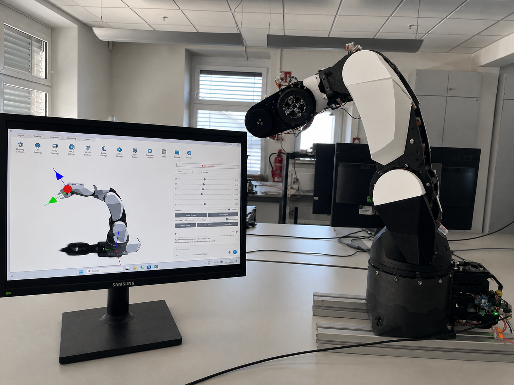
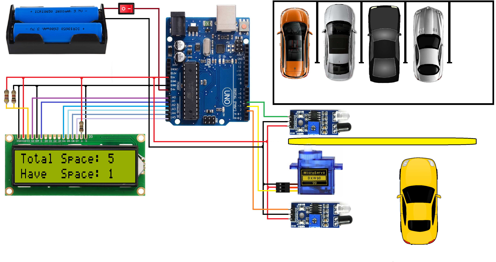

Projects
Engineering projects spanning robotics integration, embedded systems, automotive cybersecurity and practical automation.

Analysis and Improvement of Current Lock/Unlock Test Automation Strategy to Integrate an ECU-Controlled Robotic Arm
Built and validated a 6-DOF robotic test platform for automotive door-handle ECU testing, progressing from a Braccio proof of concept to an Arctos-based system. The work combined mechanical integration, embedded C/C++, CAN communication, closed-loop feedback and end-effector development for repeatable sensor interaction.

Automated CAL Inheritance
Explored the automation of Cybersecurity Assurance Level (CAL) propagation across the ASPICE V-Model using CodeBeamer ALM. The project used traceability links, custom CAL fields and computed logic to propagate CAL values from higher-level requirements into downstream system and software artefacts, reducing manual effort and maintaining consistency across the development chain.

Smart Car Parking Control System
Developed an embedded parking-control system using sensors to detect vehicle entry and exit, monitor parking availability and control an automatic gate. The system combined a microcontroller, sensors, servo-based gate control and an LCD for real-time status display.

Cyber Threat Detection Based on Artificial Neural Networking Using Event Profiles
Developed an AI-based approach for identifying and analysing cybersecurity threats using event profiles. The project investigated neural-network-based detection techniques and evaluated their application to cybersecurity datasets.